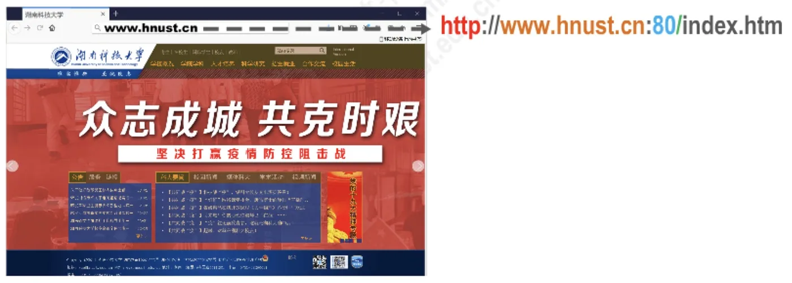
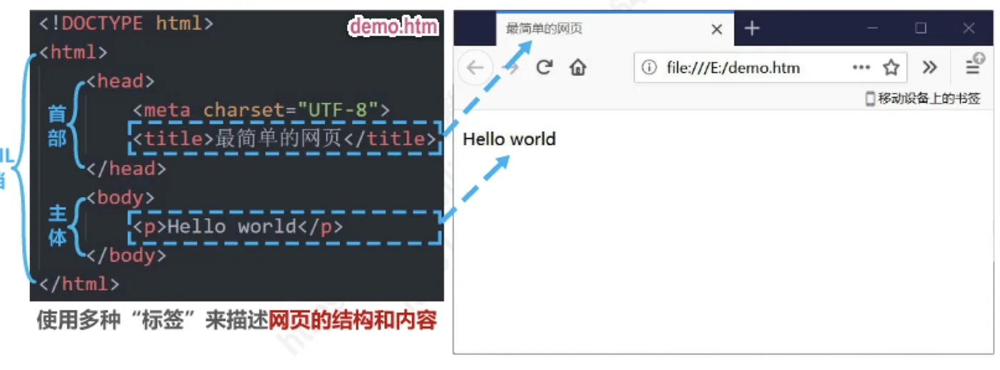
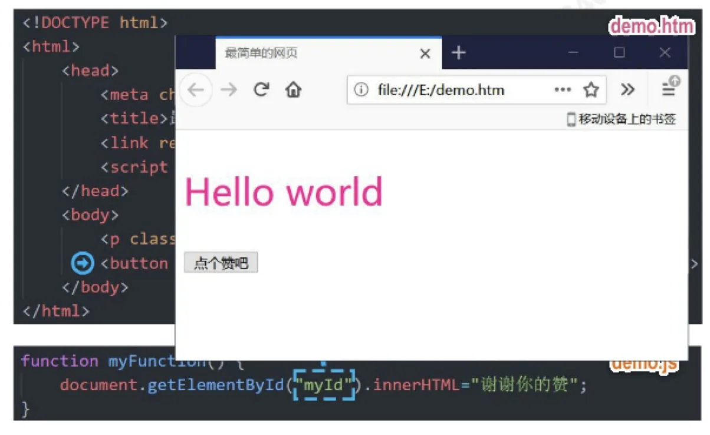
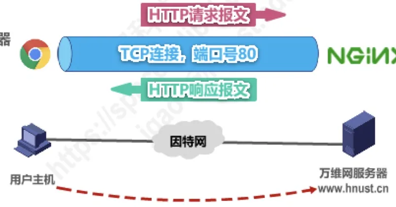
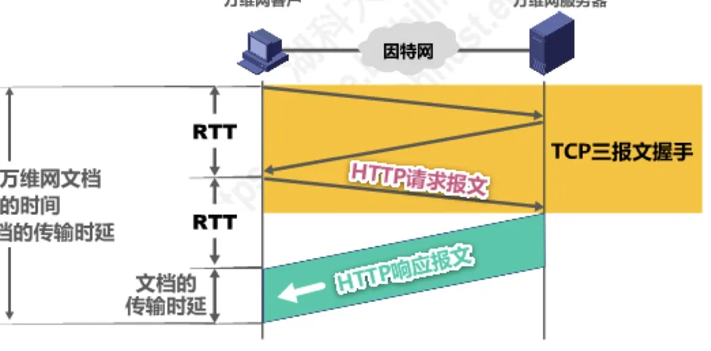
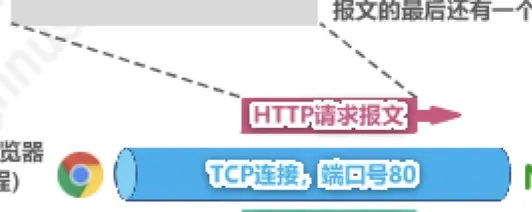
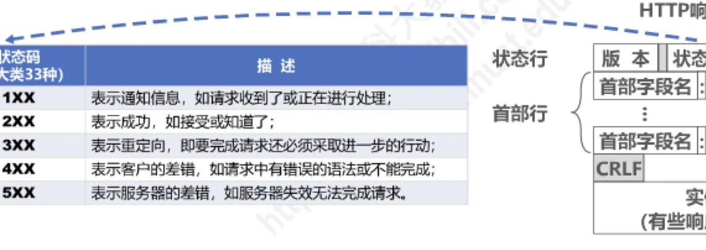
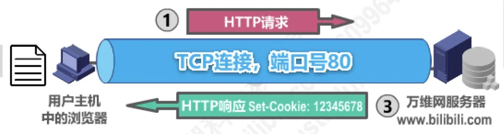
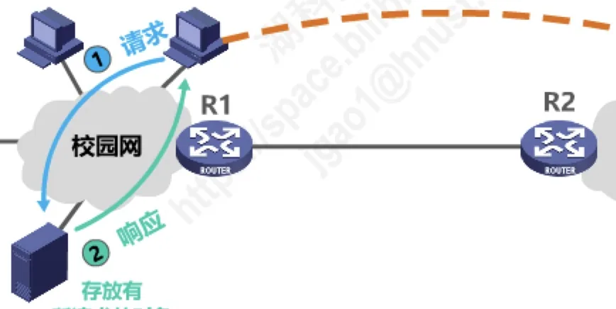
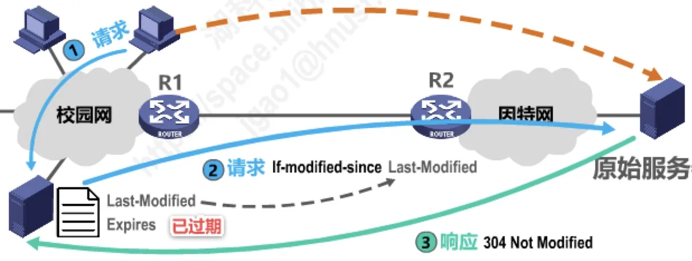

计算机通信与网络 · 第 6 章 应用层
6.7 万维网WWW
万维网是运行在因特网上的一个分布式应用，也是今天绝大多数人使用因特网的方式。本节从「万维网到底是什么」讲起，先认识浏览器与统一资源定位符 URL，再看构成网页的三种技术——HTML、CSS 与 JavaScript；随后重点讲支撑万维网的超文本传输协议 HTTP，包括它的持续连接与非持续连接、请求报文与响应报文的格式；最后看两项让万维网「记得住用户、跑得更快」的技术：Cookie 与万维网缓存。
1. 万维网概述
首先要澄清一个常见的误解：万维网 WWW（World Wide Web）并不是某种特殊的计算机网络。它是一个大规模的、联机式的信息储藏所，是运行在因特网上的一个分布式应用。它利用网页之间的超链接，把分布在不同网站上的网页链接成一张逻辑上的信息网——物理上网页分散在各地的主机里，逻辑上却连成一体。
万维网是欧洲粒子物理实验室的 Tim Berners-Lee 最初于 1989 年 3 月提出的。此后它的普及速度很快：1993 年 2 月出现了第一个图形界面的浏览器 Mosaic，1995 年著名的 Netscape Navigator 浏览器上市，从此浏览网页不再需要记忆命令，万维网真正走向大众。
2. 浏览器与渲染引擎
目前比较流行的浏览器及其渲染引擎（浏览器内核）如下表：
| 浏览器 | 渲染引擎（内核） |
|---|---|
| Chrome | Blink |
| Firefox | Gecko |
| Safari | WebKit |
| Opera | Blink |
| Internet Explorer | Trident |
浏览器最重要的部分是渲染引擎，也就是浏览器内核，它负责对网页内容进行解析和显示。不同的浏览器内核对网页内容的解析也有不同，因此同一个网页在不同内核的浏览器里的显示效果可能不同；这也正是网页编写者需要在不同内核的浏览器中测试网页显示效果的原因。
3. 万维网的工作方式
万维网同样采用客户/服务器方式（对照 6.2 节）：用户主机上的浏览器就是万维网客户进程，网页所在的服务器就是万维网服务器进程。两者通过因特网通信——浏览器向万维网服务器发出请求报文，万维网服务器把所请求的文档放在响应报文中送回。这一问一答所遵循的规则，就是本节后面要讲的 HTTP 协议。
4. 统一资源定位符 URL
为了方便地访问分布在世界范围的文档，万维网使用统一资源定位符 URL（Uniform Resource Locator）来指明因特网上任何种类「资源」的位置。URL 的一般形式由以下四个部分组成：
＜协议＞://＜主机＞:＜端口＞/＜路径＞
- 协议：指明用哪种协议获取该资源，例如 http；
- 主机：资源所在主机的域名，例如 www.hnust.cn；
- 端口：服务器进程的端口号，使用默认端口时通常省略；
- 路径：资源在服务器上的位置，例如 /ggtz/119945.htm。

5. 万维网文档：HTML、CSS 与 JavaScript
我们从浏览器里看到的一个网页，实际上往往并不是一个文件。把网页「另存为」就能看到，一个页面通常由 HTML 文件、若干图片、JavaScript 文件、CSS 文件等一起构成，浏览器把它们组合起来才是所见到的页面。其中三种技术各有分工：
| 技术 | 作用 | 扩展名 |
|---|---|---|
| 超文本标记语言 HTML | 使用多种「标签」来描述网页的结构和内容 | .htm |
| 层叠样式表 CSS | 从审美的角度来描述网页的样式 | .css |
| JavaScript | 一种脚本语言（和 Java 没有任何关系），控制网页的行为 | .js |
下面用同一个「最简单的网页」把三者串起来。最初只有一个 HTML 文件，用标签写出标题与正文：
<!DOCTYPE html>
<html>
<head>
<meta charset="UTF-8">
<title>最简单的网页</title>
</head>
<body>
<p>Hello world</p>
</body>
</html>
加入 CSS 后，样式从内容中分离出来：在 HTML 的 head 中用 <link> 引入样式表文件，样式表里用「.pink」这样的选择器规定颜色、字号等。再加入 JavaScript 后，网页就有了行为：下面这个例子里 <button> 标签绑定了点击事件，点击后由 JavaScript 把页面中的文字改成「谢谢你的赞」。

6. 超文本传输协议 HTTP
超文本传输协议 HTTP（HyperText Transfer Protocol）定义了浏览器（即万维网客户进程）怎样向万维网服务器请求万维网文档，以及万维网服务器怎样把万维网文档传送给浏览器。它建立在 TCP 连接之上，使用熟知端口号 80。

（1）非持续连接与持续连接
HTTP/1.0 采用非持续连接方式。在这种方式下，浏览器每请求一个文件都要与服务器建立一次 TCP 连接，收到响应后就立即关闭连接。这样一来，每请求一个文档就要有两倍的 RTT 开销：一次用于 TCP 三报文握手，一次用于请求与响应（TCP 三报文握手的过程见 5.8.1 节；RTT 即往返时间，是 1.5 节讲过的性能指标）。若一个网页上有很多引用对象（例如图片等），那么请求每一个对象都需要花费 2RTT 的时间。

为了减小时延，浏览器通常会建立多个并行的 TCP 连接，同时请求多个对象。但这会大量占用万维网服务器的资源——特别是万维网服务器往往要同时服务于大量客户的请求，这会使其负担很重。
HTTP/1.1 采用持续连接方式。在这种方式下，万维网服务器在发送响应后仍然保持这条连接，使同一个客户（浏览器）和该服务器可以继续在这条连接上传送后续的 HTTP 请求报文和响应报文。这并不局限于传送同一个页面上引用的对象，而是只要这些文档都在同一个服务器上就行。为了进一步提高效率，HTTP/1.1 的持续连接还可以使用流水线方式工作：浏览器在收到 HTTP 的响应报文之前，就能够连续发送多个请求报文；这样一个接一个的请求报文到达服务器后，服务器就发回一个接一个的响应报文。这样就节省了很多个 RTT 时间，使 TCP 连接中的空闲时间减少，提高了下载文档的效率。
与流水线方式相对的是非流水线方式：浏览器只有收到上一个请求的响应，才能发送下一个请求。也就是说，同一条持续连接上，非流水线方式每请求一个对象都要等满一个 RTT，而流水线方式可以让多个请求「叠」在一起，把等待时间重叠起来。把这三种方式放在一起看就很清楚：非持续连接每请求一个对象约需 2RTT（一次 TCP 三报文握手、一次请求与响应）；持续连接的非流水线方式省去了重复建连的开销，每请求一个对象约需 1RTT；持续连接的流水线方式则进一步把多个对象的等待时间重叠起来，效率最高。
（2）HTTP 的报文格式
HTTP 是面向文本的，其报文中的每一个字段都是一些 ASCII 码串，并且每个字段的长度都是不确定的。HTTP 有两类报文：请求报文和响应报文。
HTTP 请求报文由请求行、首部行、空行和实体主体组成：请求行是「方法 空格 URL 空格 版本 CRLF」，首部行是一行行「首部字段名: 值 CRLF」，最后以一个空行（CRLF）结束；实体主体在请求报文中通常不用。下面是一个实际的请求报文：
GET /index.htm HTTP/1.1
Host: www.hnust.cn
Connection: close
User-Agent: Mozilla/5.0
Accept-Language: cn逐行来看：请求行指明方法 GET、URL 与 HTTP 版本；Host 是首部行的开始，指明服务器的域名；Connection: close 告诉服务器发送完请求的文档后就可以释放连接（若为持续连接，这里应写 keep-alive）；User-Agent 告诉服务器浏览器的类型及版本；Accept-Language: cn 告诉服务器用户希望优先得到中文版本文档。报文最后还有一个空行。

请求行中的「方法」共有 9 种，它们对资源的操作含义如下：
| 方法 | 描述 |
|---|---|
| GET | 请求 URL 标志的文档 |
| HEAD | 请求 URL 标志文档的首部 |
| POST | 向服务器发送数据 |
| PUT | 在指明的 URL 下存储一个文档 |
| DELETE | 删除 URL 标志的文档 |
| CONNECT | 用于代理服务器 |
| OPTIONS | 请求一些选项信息 |
| TRACE | 用来进行环回测试 |
| PATCH | 对 PUT 方法的补充，用来对已知资源进行局部更新 |
HTTP 响应报文的结构与请求报文对应，由状态行、首部行、空行和实体主体组成，区别在于第一行是「版本 空格 状态码 空格 短语 CRLF」，实体主体在有些响应报文中也不用。状态码共有五大类 33 种：
| 状态码 | 描述 |
|---|---|
| 1XX | 表示通知信息，如请求收到了或正在进行处理 |
| 2XX | 表示成功，如接受或知道了 |
| 3XX | 表示重定向，即要完成请求还必须采取进一步的行动 |
| 4XX | 表示客户的差错，如请求中有错误的语法或不能完成 |
| 5XX | 表示服务器的差错，如服务器失效无法完成请求 |
响应报文中常见的状态行有：HTTP/1.1 202 Accepted（接受请求）、HTTP/1.1 400 Bad Request（错误请求）、HTTP/1.1 404 Not Found（找不到页面）。

7. 使用 Cookie 在服务器上记录用户信息
早期的万维网应用非常简单，仅仅是用户查看存放在不同服务器上的各种静态文档，因此 HTTP 被设计为一种无状态的协议——服务器不记录客户的历史行为，这样可以简化服务器设计。但现在用户可以通过万维网实现各种复杂的应用，如网上购物、电子商务等，这些应用往往需要万维网服务器能够识别用户。
Cookie 提供了一种机制，使得万维网服务器能够「记住」用户，而无需用户主动提供用户标识信息。也就是说，Cookie 是一种对无状态的 HTTP 进行状态化的技术。它的工作过程分为四步：
- ① 用户主机中的浏览器向万维网服务器发出 HTTP 请求；服务器为该客户生成一个唯一的 Cookie 识别码，并以此索引在服务器后端数据库中创建一个项目，用来记录该用户访问该网站的各种信息；
- ② 服务器在 HTTP 响应中通过
Set-Cookie: 12345678首部把这个识别码交给浏览器； - ③ 浏览器把 Cookie 信息存入本机文件；
- ④ 此后再访问该网站时，浏览器从文件中读取 Cookie，并在 HTTP 请求中带上
Cookie: 12345678；服务器根据 Cookie 识别码就能识别出该用户，并返回该用户的个性化网页。

8. 万维网缓存与代理服务器
在万维网中还可以使用缓存机制以提高万维网的效率。万维网缓存又称为 Web 缓存（Web Cache），它可位于客户机，也可位于中间系统上；位于中间系统上的 Web 缓存又称为代理服务器（Proxy Server）。Web 缓存把最近的一些请求和响应暂存在本地磁盘中：当新请求到达时，若发现这个请求与暂时存放的请求相同，就返回暂存的响应，而不需要按 URL 的地址再次去因特网访问该资源。
若 Web 缓存的命中率比较高，就会大大减少校园网出口链路上的通信量，因而减少了访问因特网的时延——这正是缓存的价值所在。

缓存中的对象并不是永远有效的。原始服务器的响应报文里带有 Last-Modified（对象最后一次被修改的时间）和 Expires（对象的过期时间）等首部，代理服务器就依据它们判断暂存的对象是否已经过期：未过期时直接把暂存的响应返回给客户；已过期时才需要到原始服务器确认一次。
缓存里的对象可能已经过时，因此还需要一套「问一问原始服务器」的机制：代理服务器用首部 If-modified-since（其值取自上次响应中的 Last-Modified）向原始服务器发出请求。若对象自那时起没有更改，原始服务器就回送 304 Not Modified，代理服务器继续使用缓存中的对象；若对象已更改，原始服务器则把新的实体随响应一起送回，代理服务器更新缓存后返回给客户。

本节小结
- 万维网 WWW 是一个大规模的、联机式的信息储藏所，是运行在因特网上的分布式应用；它用超链接把不同网站的网页连成一张逻辑信息网，1989 年由 Tim Berners-Lee 提出。
- 浏览器最重要的部分是渲染引擎（内核），负责解析和显示网页内容；不同内核的显示效果可能不同。
- 万维网使用 URL 指明资源位置，一般形式为 ＜协议＞://＜主机＞:＜端口＞/＜路径＞。
- 网页由三种技术构成：HTML 描述结构与内容（.htm）、CSS 描述样式（.css）、JavaScript 控制行为（.js，与 Java 无关）。
- HTTP 定义浏览器怎样请求文档、服务器怎样传送文档，建立在 TCP 之上，端口号 80；HTTP/1.0 用非持续连接（每请求一个文件都要建立连接，每请求一个文档约 2RTT 开销），HTTP/1.1 用持续连接（响应后保持连接）；持续连接又分非流水线（收到上一个响应才能发下一个请求，每对象约 1RTT）与流水线（可连续发送多个请求，等待时间重叠）两种工作方式。
- HTTP 有两类报文：请求报文（请求行＋首部行＋空行＋实体主体）与响应报文（状态行＋首部行＋空行＋实体主体）；报文字段都是 ASCII 码串、长度不确定；请求方法共 9 种，状态码分五大类共 33 种。
- Cookie 是对无状态 HTTP 进行状态化的技术，让服务器能够「记住」用户，而无需用户主动提供标识信息。
- 万维网缓存（Web Cache）把最近的请求和响应暂存在本地磁盘；位于中间系统上的 Web 缓存称为代理服务器，命中率高时可大幅减少出口链路通信量、降低访问时延。对象是否过期由响应报文中的
Expires、Last-Modified决定：未过期直接返回暂存响应；已过期则用If-modified-since向原始服务器确认，未更改回304 Not Modified，已更改则取回新实体并更新缓存。